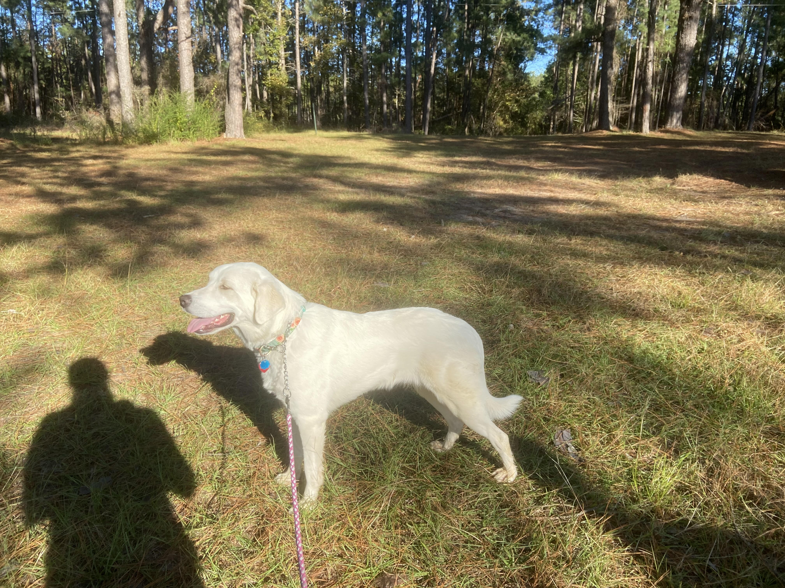
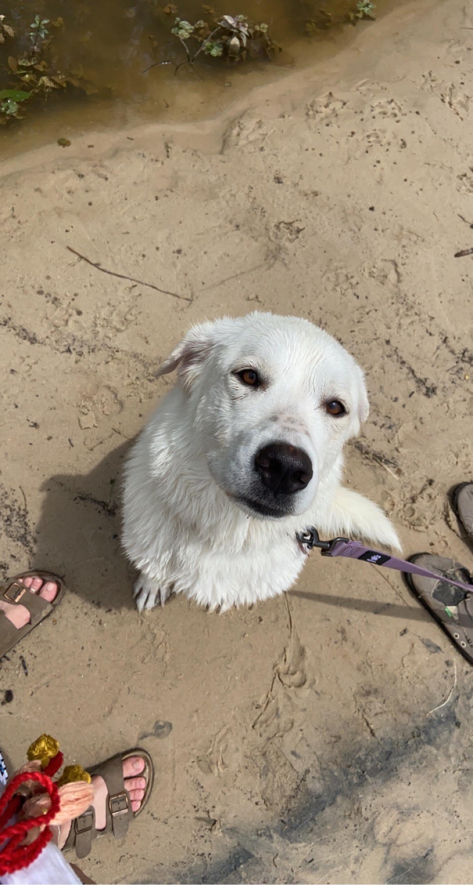
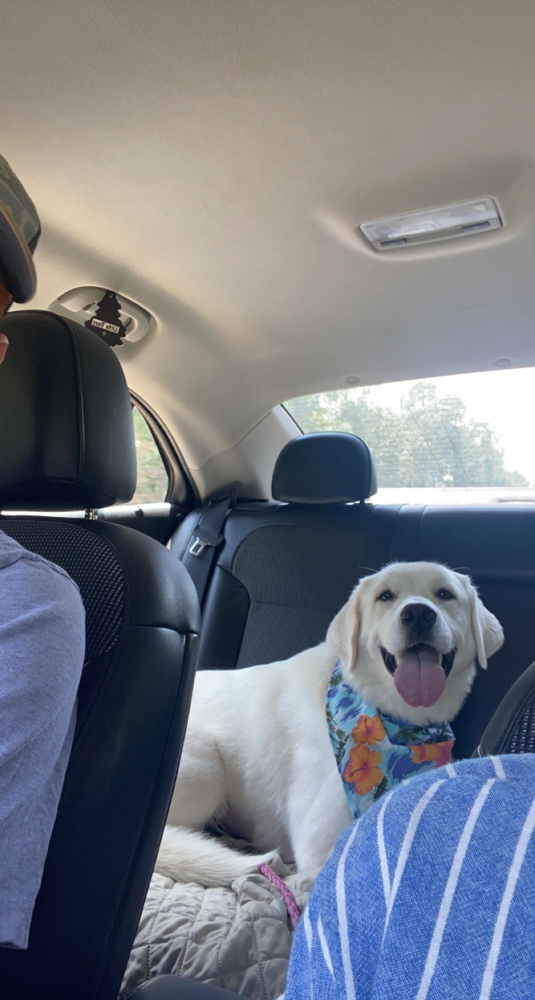
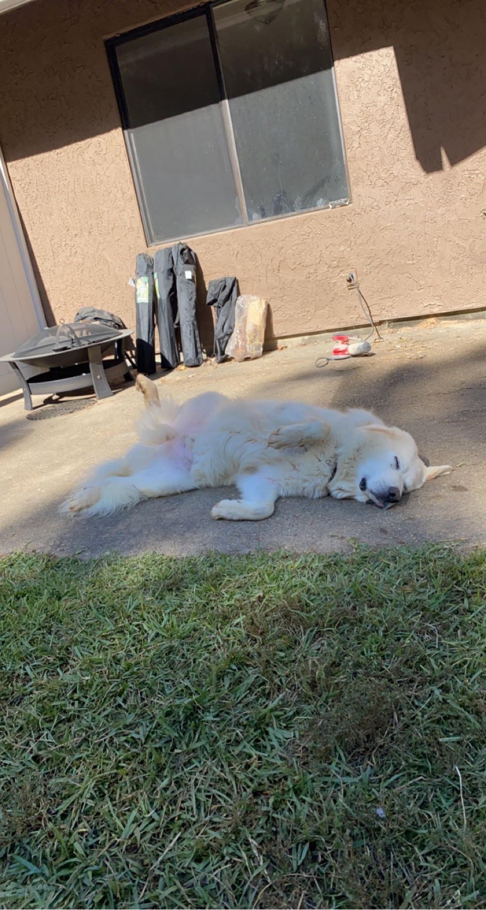
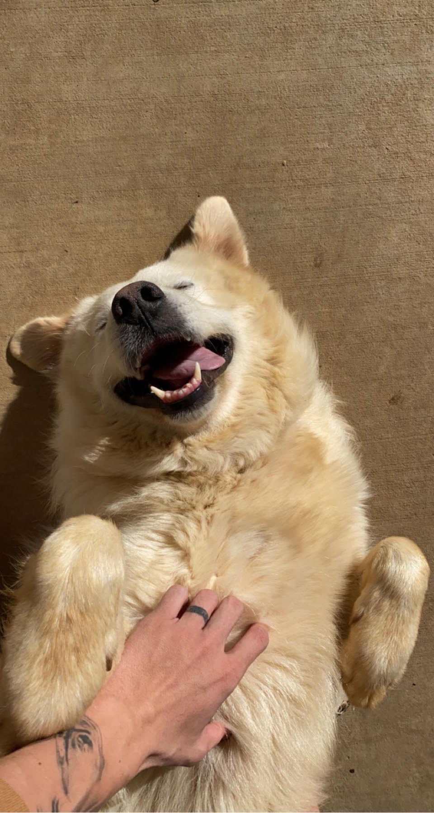
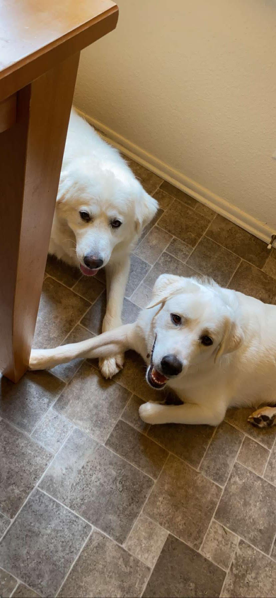

About The Great Pyrenees
The Great Pyrenees originates from the French side of Pyrenees Mountains, bordering Spain. The Great Pyrenees was bred to be a livestock guardian, protecting their herds or flocks of animals for farmers. Being that they were bred to protect prey animals, they are extremely large and extremely independent. They have a very strong drive to be on their own which makes them hard to train. The GP naturally wants to guard, but other than that they don't like to do much. They sleep most of the day to conserve energy and are up a majority of the night patrolling to protect from predators. In this case they patrol my house and think that my wife and I are their flock. The GP is very protective, sensing danger from a distance and going into attack mode quite quickly. Being that they are so large and are bred to fight off predators, they sleep a majority of the day to conserve energy. However these dogs get bursts of energy (primitively to fight off wolves), but in a modern society this just means they play for about 15 minutes before being done for the day.
As I said the GP is a mountain dog so they love to climb. In fact they were bred to climb and are considered polydactyl canines. This means that they have 2 dew claws on each rear leg to assist them in climbing. This also provies a snowshoes effect, aiding them in walking in deep snow in the mountains. Great Pyrenees also have what some might consider a mane around their neck. This mane is less hair and is actually a majority loose skin around their throat. The reason for this evolution is for 2 different factors. The first reason is to make the dog look bigger and therefore more intimidating to predators. The second reason is should they fight a predator, the extra skin makes the predator think the GP neck is bigger than it is, making them bite skin and not the throat of the dog. If you're considering adopting a Great Pyrenees I would take these things into thought:
- Great Pyrenees are extremely stubborn and therefore hard to train.
- Being a big dog, GP are prone to medical conditions, the number 1 issue being hip displaysia.
- GP love to roam and dig, allow them to have territory to call theirs.
- Have patience. This is an extremely loving and caring dog however they need a lot of patience and training to become a domesticated house dog.
My Great Pyrenees
I have two Great Pyrenees: Piper and Riley. Piper is a two and a half year old rescue and Riley is a six year old rescue. Both of them were abused pretty bad before we got them but have made a great turn around and are now two loving protectors who have found their place once again.
| Name | Age | Weight |
|---|---|---|
| Piper | 2.5 | 70 lbs |
| Riley | 6 | 130 lbs |
Piper:
  Riley:
  More Information About Great Pyrenees
For more information about Great Pyrenees, check out these links: